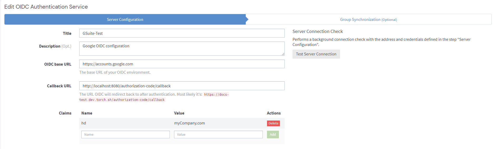
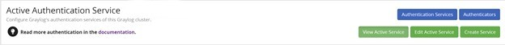
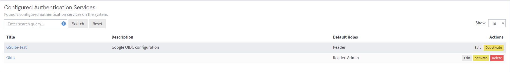

We strongly recommend restricted access as a best practice for all, but it is especially necessary for self-managed, publicly available Graylog instances.
.jpg)
Graylog 4.2 introduces generic OpenID Connect (OIDC) authentication on-premise, ensuring that your Graylog login can be managed with a variety of OIDC-compliant identity providers.
These providers have been tested successfully with Graylog; however, you are encouraged to explore authentication with any OIDC-compliant provider that best fits your needs and environment.
hd Claim Authentication ParameterWe strongly recommend restricted access as a best practice for all, but it is especially necessary for self-managed, publicly available Graylog instances.

hd claim under "Name" and provide your
organization's domain name in the "Value" field.
For more information regarding the hd
To begin, obtain authentication credentials from your provider to configure your OIDC protocol. Navigation of each provider’s application is different. In this example, we will look at how to set up an OIDC service with Auth0.

Now you can use the credentials from Auth0 to fill in the following fields and make your selections, including:
Select “Server Connection Check." Click Apply. The Server Connection Check allows Graylog to perform a basic consistency and connectivity check of the configuration. Any errors detected at this point are noted by the application before proceeding.
Currently, Group Sync is only available with Okta authentication.
Once you have configured the service, activate your current service provider to enable the authentication protocol. Only one authentication service can be activated at a time for each Graylog instance. If you change service providers or need to update your settings, be sure to activate the new service from this menu.
